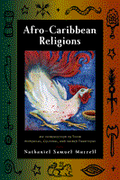

<body bgcolor="#FFFFFF" text="#000000" link="#0000FF" vlink="#CC0000" alink="#CC0000"><center><hr width="350" size="1" align="center" noshade>A comprehensive introduction to the Caribbean’s African-based religions<hr width="350" size="1" align="center" noshade><p><a href="https://cdcshoppingcart.uchicago.edu/Cart/ChicagoBook.aspx?ISBN=9781439900406&&PRESS=temple" target="_top">Buy this book!</a> | <a href="https://cdcshoppingcart.uchicago.edu/Cart/Cart.aspx?PRESS=temple" target="_top">View Cart</a> | <a href="https://cdcshoppingcart.uchicago.edu/Cart/Cart.aspx?PRESS=temple" target="_top">Check Out</a></p><p></p></center><!--none//--><h1>Afro-Caribbean Religions</h1>
<H2>An Introduction to Their Historical, Cultural, and Sacred Traditions</H2>
<h3>Nathaniel Samuel Murrell</h3>
<P>cloth 1-4399-0040-X $95.50, Dec 09, <FONT COLOR=#990033>Available</FONT>
<br>paper 1-4399-0041-8 $43.95, Dec 09, <FONT COLOR=#990033>Available</FONT>
<br>Electronic Book 1-4399-0175-9 $43.95 <FONT COLOR=#990033>Available</FONT>
<BR> 440 pp
6x9
4&nbsp;map(s) 1&nbsp;figure 9&nbsp;halftones
</P><BLOCKQUOTE><I>"</i>Afro-Caribbean Religions<i> is an excellent book&#151richly informative, well researched and well organized. Murrell explains complex religions in accessible language and successfully informs the reader about the content and history of the religions that are so respectfully presented here. It is truly an enjoyable read, in which one learns something new on virtually every page. I expect </i>Afro-Caribbean Religions<i> to receive an enthusiastic reception among students and professors alike for many years to come.</i>"<br><b>&#151Dr. Terry Rey</b>, Associate Professor and Chair of Religion at Temple University</I></BLOCKQUOTE>
<p>Religion is one of the most important elements of Afro-Caribbean culture linking its people to their African past, from Haitian Vodou and Cuban Santeria&#151popular religions that have often been demonized in popular culture&#151to Rastafari in Jamaica and Orisha-Shango of Trinidad and Tobago. In <i>Afro-Caribbean Religions</i>, Nathaniel Samuel Murrell provides a comprehensive study that respectfully traces the social, historical, and political contexts of these religions. And, because Brazil has the largest African population in the world outside of Africa, and has historic ties to the Caribbean, Murrell includes a section on Candomble, Umbanda, Xango, and Batique.
</p><p>
This accessibly written introduction to Afro-Caribbean religions examines the cultural traditions and transformations of all of the African-derived religions of the Caribbean along with their cosmology, beliefs, cultic structures, and ritual practices. Ideal for classroom use, <i>Afro-Caribbean Religions</i> also includes a glossary defining unfamiliar terms and identifying key figures. </p>
<BR>&nbsp;<h2>Excerpt</h2><P>Excerpt available at <a href="http://www.temple.edu/tempress">www.temple.edu/tempress</a></p>
<BR>&nbsp;<h2>Reviews</h2>
<p><i>"Murrell has produced a very useful and long overdue introduction to African Caribbean religious traditions. His synthesis of a wide-range of scholarship on African Brazilian traditions, Haitian Vodou, and Rastafari is especially impressive. The categorization of topics is well executed, and the presentation of traditions is carefully laid out in a structure that is thematically cohesive and allows readers to connect the content and arguments across each chapter. I expect that Murrell's book will commend itself as a classic over time in the field, especially given the dearth of comprehensive publications on African Caribbean religions"</i>
<br>&#151<b>Dianne Stewart Diakité</b>, Associate Professor of Religion, Emory University
<p><i>"It will prove invaluable for experienced readers with a deep interest in the subject, whether or not in the classroom." </i>
<br>&#151<b><i>Library Journal</i></b>
<p><i>"[A]n extremely well-researched introduction to African-derived religions of the Caribbean. In an accessible, cohesive format, Murrell traces the complex development and adaptation of various African traditional religions within specific Caribbean national and transnational contexts.... This book will be an invaluable resource to both students and specialists alike. Summing Up: Highly recommended." </i>
<br>&#151<b><i>CHOICE</i></b>
<p><i>"[T]he 'context of contact' was the most important factor determining the nature and form of [Orisha's] complex, syncretic religion. Nathaniel Samuel Murrell has taken this approach in his authoritative and highly readable </i>Afro-Caribbean Religions<i> and has applied it to virtually all of the major African-derived religions in the Caribbean culture area.... Murrell’s careful attention to history and the context of contact proves invaluable to his analysis of the precise syncretic mechanisms at work in the various religions.... </i>Afro-Caribbean Religions<i> is a welcome addition to the literature on African-derived religions in the New World and should prove to be an invaluable resource for anyone who has an interest in this area. Encyclopedic and scholarly, it will no doubt become the definitive source on Afro-Caribbean religions."</i><br>&#151<b><i>The New West Indian Guide</i></b>
<p><i>"The African-based religions of the New World have been much studied, for over a century now, but no single scholar has attempted a work as comprehensive as this. The word 'monumental' will probably be used to describe it. The book jacket says the work covers 'every African-derived religion of the Caribbean;' and it looks as well into the broad African roots of, and specific cultural influences upon many of them, and he cites all relevant scholarship....It is a vast and mostly successful undertaking, truly a monumental work, and it must be on the shelf of anyone interested in cultures of the Caribbean, from any disciplinary perspective."</i><br>&#151<b><i>Anthropos</i></b>
<p><i>"</i>Afro-Caribbean Religions<i> is an in-depth and detailed examination of the religions that survived the journey from Africa."</i><br>&#151<b><i>NACLA Report on the Americas</i></b>
<p><i> "[A] comprehensive survey of the varied religious traditions in the Caribbean that have African cultural roots.... Murrell approaches his study as an insider well aware of Afro-Caribbean culture and its religious complexity.... It [is] an important addition to the field of black religious studies."</i><br>&#151<b><i>Journal of African American History</i></b>
<BR>&nbsp;<P><p>&nbsp;&nbsp;<font color="#3152A5">Also available in e-book</font></p></P><BR>&nbsp;<br>
<h2>Contents</h2><P>
<p>Acknowledgments
<br>Introduction
<p><b>PART I: African Connections: Historical Roots Of Afro- Caribbean Religions</b>
<br>1. Yoruba, Fon- Ewe, Ashanti, and Kongo Cultural History
<br>2. African Cultus and Functionaries
<p><b>PART II: Vodou: Haitian Religion</b>
<br>3. Vodou and the Haitians’ Struggle
<br>4. Serving the Lwa
<p><b>PART III: Santeria And Palo Monte: Cuban Religion Of The Orisha And Drums</b>
<br>5. Caribbean Santeria
<br>6. Energy of the Ashe Community and Cultus
<br>7. Palo Monte Mayombe
<p><b>PART IV: Creole Religions Of The Southern Caribbean</b>
<br>8. Dancing to Orixas’ Axe in Candomble
<br>9. Umbanda and Its Antecedents
<br>10. Orisha Powers: Creole Religion in Trinidad and Tobago
<p><b>PART V: Jamaica’s Creole Religions:
Culture Of Resistance And Rhythms</b>
<br>11. Obeah: Magical Art of Re sis tancer
<br>12. Myal and Kumina in Jamaica’s Past
<br>13. Poco, Zion, and Convince
<br>14. The Rastafari Chant
<p>Conclusion
<br>Notes
<br>Glossary
<br>Selected Bibliography
<br>Index
</P><BR>&nbsp;<H2>About the Author(s)</H2>
<table><tr><td valign="top"><img src="/tempress/authors/1634_au1.gif" height="90" width="75"></td><td width="100%" valign="middle"><p><b>Nathaniel Samuel Murrell</b> is Associate Professor of Philosophy and Religion at the University of North Carolina Wilmington and the co-editor of <i><a href="1244_reg.html" target="_top">Chanting Down Babylon: The Rastafari Reader</a></i> (Temple).</P></td></tr></table>
<BR><H2>Subject Categories</H2>
<p><A HREF="/tempress/religion.html" TARGET="_top">Religion</a>
<BR><A HREF="/tempress/latin.html" TARGET="_top">Latin American/Caribbean Studies</a>
<BR><A HREF="/tempress/african_studies.html" TARGET="_top">African Studies</a>
</p>
<p align="center"><a href="https://cdcshoppingcart.uchicago.edu/Cart/ChicagoBook.aspx?ISBN=9781439900406&&PRESS=temple" target="_top">Buy this book!</a> | <a href="https://cdcshoppingcart.uchicago.edu/Cart/Cart.aspx?PRESS=temple" target="_top">View Cart</a> | <a href="https://cdcshoppingcart.uchicago.edu/Cart/Cart.aspx?PRESS=temple" target="_top">Check Out</a></p><p><font face="Arial" size="1"><a href="copyright.html" onMouseOver="window.status='Web Copyright Policy';return true;" onMouseOut="window.status=''" title="Web Copyright Policy">&copy;</a> 2015 <a href="http://www.temple.edu" target="new" onMouseOver="window.status='Link to Temple University home page';return true;" onMouseOut="window.status=''" title="Link to Temple University home page">Temple University</a>. All Rights Reserved. http://www.temple.edu/tempress/titles/1634_reg.html</font></p>